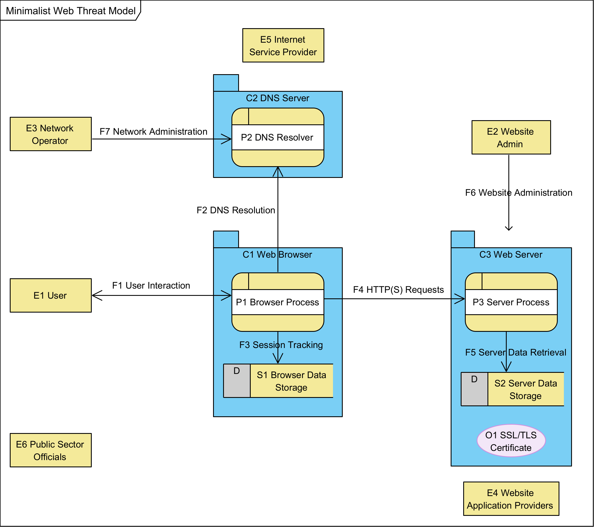

This example threat model illustrates how to use the ReSpec Threats rendering library.
This is an example use of the threat modeling library in a simple ReSpec document. It is not intended for use as an actual threat model.
Threat modeling is a vital part of specification development.
Ths example builds on the Minimalist Threat Model for the Web as specified in the W3C Threat Modeling Guide.
The World Wide Web ("the Web") is built on many different technologies, many of which are independently developed and maintained. This makes threat modeling for the Web a complex challenge (See The Web is Unversioned).
For this threat model, we think about the World Wide Web as just nine independent components: three human (user, website admin, and network operator), three in software (a browser, a DNS server, and a web server), and three legal persons (Website Application Providers, Internet Service Providers, and Public Sector Officials). This is an intentionally simplified view of the web so that we can focus on the threats inherent in a minimal instantiation of an TLS-secured World Wide Web as an illustration of how to threat model. It is our hope that this work catalyzes a broader, more extensive threat modeling effort that eventually can be used in earnest to improve the security of the web.

For this diagram, consider the simplest realization of the world wide web including DNS and TLS.
In the intended use, a user (E1) interacts (F1) with a browser process (P1), which operates in its own container, the web browser (C1). This interaction directs the browser to display a specific URL as selected by the user. The browser process (P1) starts by resolving the domain name of that URL by requesting DNS resolution (F2) from a DNS resolver (P2), which returns an IP address for HTTPS requests to that domain. This information is tracked as session data (F3) and stored in browser data storage (S1). Then, the browser sends HTTPS requests (F4) to a server process (P3), which is running in its own container, the web server (C3). These requests (F4) are encrypted using TLS protocols. In response to requests (F4), the web server returns a TLS certificate (O1) and the resource requested, using its own server data storage (S2) to generate an appropriate response.
Supporting this operation are the Website Administrator (E2) and the (E3) Network Administrator, who keep the network-available services running.
Additional stakeholders include the legal entities running websites (E4 Website Application Providers) as well as those legal persons running Internet infrastructure (E5Internet Service Providers). Finally, public servants of various kinds have both legitimate interests in making sure everything is running according to the law and public policy (E6 Public Sector Officials).
note:We do NOT model potential attackers, as over-characterizing attackers can lead to analysis bias that is better avoided.
It is understood that the browser process (P1) is likely realized as multiple processes running as software in an operating system on a device. Threat modeling for such details would suggest breaking both the process and its container (C1) into its subcontainers and processes, identifying the flows between each. However, in this threat model, we treat the web browser as just two elements, the browser process and its data storage.
Similarly, the web server (C3) is often realized not only as multiple processes, but often with data flows that communicate with multiple back-end systems in response to user requests. However, it is possible to realize the web server as a single process in a single container with its own local storage, which contains its TLS certificate. For our analysis, we choose this minimalist realization.
The DNS resolver also depends on external data flows that are beyond the scope of this threat model.
We treat the DNS Server and the Web Server as essentially black box elements which provide information in response to requests, but whose internals are intentionally outside the threat model. We are not evaluating the threats of the DNS system. Nor are we evaluating the threats of any particular back-end system or web server. These are external systems which may be worth noting as sources of threats, but whose definitions are beyond this scope.
| E1 User | The user of the Web. Designed for human users, this role can also be realized by automated software, including scripts and AI. However, we consider the user as a black box without regard to the type of user or the subprocesses and data that might be used internally. Users control a user-agent, aka a browser, for interacting with the World Wide Web. |
| E2 Website Administrator | The administrator of the website. Their goal is to keep the website running as intended by the website owner. It may be presumed that they have complete access to everything on the server and can monitor or manipulate all communications into and out of the website. |
| E3 Network Administrator | Any number of network administrators who keep the network running, including maintaining an operational DNS system. In practice, this party also has the ability to watch and manipulate activity on its services. |
| C1 Web Browser | The collection of processes and data that realize the web browser for an individual user. Typically running in an operating system on a device, potentially alongside other processes, possibly with different threat boundaries. In this threat model, the browser is simplified to just a single process and single data store. |
| C2 DNS Server | The collection of processes and data that perform DNS resolution. Typically running as a service on a server somewhere, we treat it and any back-end networking as a black box that simply turns domain names into IP addresses. |
| C3 Web Server | The collection of processes, data, and data objects that perform the server role in browser interactions. Typically running as a service on a server somewhere, we treat any sub-process architecture and back-end data flows as a black box that simply responds correctly to properly formed HTTPS requests using its own data store (S2) and data object (O1). |
| P1 Browser Process | The running algorithm that processes user interaction (F1) to engage with resources requested (F4) from different web servers (C3) using its own data storage (S1) to present a coherent browsing experience. |
| P2 DNS Resolver | Returns the IP address for interacting with a provided domain. |
| P3 Server Process | The running process that receives and responds to HTTPS requests, providing resources for display or use by web browsers. |
| F1 User Interaction | User input and display, for controlling the browser and viewing the web. |
| F2 DNS Resolution | Requests to turn a domain name into an IP address. Response includes the IP address. |
| F3 Session Tracking | Management of current browser sessions to keep track of TLS meta-data and related information. |
| F4 HTTPS Requests & Responses | Requests from the browser to the server and their responses. |
| F5 Server Data Retrieval | Requests from the server process (P3) to server data storage (S2) for information needed to respond to HTTP requests. |
| F6 Website Administration | To set up and maintain the website, administrators engage in a number of activities, with data flows in both directions. Assume the website administrator has unlimited access to the website system. |
| F7 Network Administration | Like Website administrators, network operators engage in a number of data flows to set up and maintain the network, including running DNS servers. Assume the network administrator can see and manipulate anything on the network unless explicitly secured in some manner. |
| O1 TLS Certificate | Digital object that allows systems to verify the identity & subsequently establish an encrypted network connection to another system using the Transport Layer Security (TLS) protocol. |
The user of the Web. Designed for human users, this role can also be realized by automated software, including scripts and AI. However, we consider the user as a black box without regard to the type of user or the subprocesses and data that might be used internally. Users control a user-agent, aka a browser, for interacting with the World Wide Web.
Users include just about any human on the planet using web technology to realize their own goals. This includes your healthy, wealthy consumer with the latest technology as well as members of vulnerable populations in challenging situations where accessibility and connecting might be a challenge.
These users' shared goal is reliable access to web-based services. Those services should operate as intended and the information they receive through their browser should be as the website provider intended.
The administrator of the website. Their goal is to keep the website running as intended by the website owner. It may be presumed that they have complete access to everything on the server and can monitor or manipulate all communications into and out of the website.
The goal of website administrators is for their website to deliver authentic services over the network without interference such that interactions with end-users are faithfully engaged in both directions, from the browser through the network to the server and back. They want confidence that the end-user is experiencing the application that they developed without interference during communication. Finally, they want the input from users to be unadulterated and timely.
This includes all parties with authority to affect the website, including developers and customer support.
Any number of network administrators who keep the network running, including maintaining an operational DNS system. In practice, this party also has the ability to watch and manipulate activity on its services.
These individuals work for Internet Service Providers and includes defending the network against any attackers, including enterprise network operations. They keep the network running. That denial of service and person-in-the-middle attacks. As the guardian of the network, these individuals often need to view data that could be used maliciously by malicious parties.
The goal of network administrators is visibility and control over the parts of the network they control, and reliability and integrity for the parts of the network they don’t.
Web application providers fund and maintain websites that provide services to end-users. These include for-profit organizations, whose offering necessarily supports their money-making agenda, as well as mission-driven public-sector and non-profit organizations for whom the website may serve a social benefit other than profit generation.
The goal of website application providers is to be reliably accessible to their constituents and to realize their intended functional goals, such as selling products or managing conversations. Focused on just their own applications, these providers rely on the Web as a medium for interacting with their customers and stakeholders.
Internet Service Providers (ISPs) deliver infrastructure services such as connectivity, hosting, and specific network components such as DNS hosting and registration, email services, as well as dynamic DNS and TLS certificates.
These parties need the network to keep running, resilient to considered "utility" providers whose offerings are best appreciated attacks that would disrupt operations. While they are often when they are most invisible.
The goal of Internet service providers is for users on both ends of the network (end-users and services) to be able to reach the other end, as designed and implemented by application providers. Hosting providers want their clients' websites to stay up and be accessible in a reliable way; connectivity providers want their clients to have reliable, uninterrupted, and unfettered access to the services (or users) they want to reach online.
Public sector officials include law enforcement, elected officials, and regulators seeking to oversee public interests in our digital communities.
Unfortunately, the Web doesn’t have specific oversight roles for public sector officers. The protocols and specifications of the World Wide Web do not specifically give capabilities to different parties based on their status or role in society. Nevertheless, these entities have jobs to do, whether it is enforcing privacy regulations or investigating a murder.
While too much public oversight can constitute undesirable surveillance and abuse of power, specification developers and implementers should consider threats posed both *by* public sector entities and *to* public sector interests. For example, subpoenas and other legal mechanisms can force website providers to reveal information otherwise secured by technical means. In some use cases, this may be important for security and privacy considerations.
The goal of public sector officials is to ensure that rules and regulations are being followed in their jurisdiction so that legitimate services can be securely accessed by appropriate persons wherever and whenever that might be. This includes preventing fraud, illicit sales, and privacy harms.
This threat model is an example and is not actively maintained. However, the threat rendering library is open for feedback, bug reports, and proposed changes via issues and pull requests.
To propose a change, create an issue proposing your change.
To add a new threat to the model, we need several components.
We discuss each of these below.
Choose a short, descriptive name that captures the essence of the threat. Make sure the name is distinctive within this threat model.
Every threat should have a unique ID that starts with the letter 'T' following by an integer number, e.g., T12
Describe the threat with enough detail for readers to understand the scope of concern
Each response should describe something either the specification does or that implenters should consider to address the threat. Responses also need a good name (short and descriptive) and a unique ID (starting with the letter 'R' followed by an integer number).
It is likely that a single response is appropriate for multiple unique threats. For example, cryptographic signing is a reasonable response to tampering for any number of data objects. In this case, simply reuse the response name and ID of the first use and repeat the description text along with the phrase, in parantheses, '(Reused Response)'
Drawing from the diagram and dictionary, identify the components in the diagram affected by this threat. Make sure the PR includes a link to the affected components, e.g.,
C1
Identify the threat taxonomy used to identify the threat. For example, STRIDE, LINDUN, or OSSTMM3 for taxonomy. If none was used, enter "NONE".
Identify the class of threat as defined within the threat taxonomy. For example, "Spoofing".
Create a JavaScript file that defines and registers your threat, formatted like the following template. Make sure you retain the opening immediate function execution wrapper and that you register with the ThreatModel object.
// wrap your data definition in an Immediately Invoked Function Expression
(function () {
// then define a single threat
var threat = {
id: "T0",
name: "Template Threat",
description: "This is a template threat. It is not a real threat.",
responses: [{
id: "R0",
name: "Template Response",
description: "This is a template response. It is not a real response."
}],
elements: ["C1", "P1"],
taxonomyName: "Fake Taxonomy",
taxonomyClass: "Fake Type"
tags: ["security"]
}
};
// then register that threat with the global ThreatModel object
window.ThreatModel.registerThreat(threat);
})(); // Finish the Immediately Invoked Function Expression
Name the file uniquely, preferably with the following pattern based on the ID and name, all in lower-case kebab style
var id = `${threat.id}-${threat.name}`;
id = id.toLowerCase();
id = id.replace(/ /g, "-");
return id;
For example, T0. Template Threat becomes
t0-template-threat
Add a new <script> tag
<script src="threats/t0-template-threat.js"></script>
Update the outline.js file, adding the id of
your threat, e.g., T0 to the threats array.
Open the index.html locally and you should see your threat added to the list. Propose your working change as a PR, for consideration by the editors.